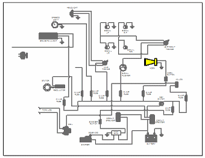

Edit a block in context
When you use the Edit command to edit a block occurrence or block view, all of the surrounding 2D objects on the sheet are visible and selectable, and they can be added to the block graphics. The same scale and rotation is used to display all of the geometry on the sheet. Additional editing commands are available when editing a block in context.
You cannot edit nested blocks in context.
-
On the drawing sheet, right-click a block, and then select Edit on its shortcut menu.
The selected block is opened for editing. Objects that are not in the block definition are visible, but they are displayed in the deactivated color.
Example:In this diagram, the yellow block is selected for editing. The surrounding objects are available for selection, but they are displayed in the deactivated color.

-
Do one or more of the following to add or edit graphics in the block as needed.
-
Add elements to the block
-
Choose Sketching tab (or Home tab)→Blocks group→Add to Block .
-
Select 2D objects from the surrounding elements on the sheet. You can use Shift+click to add or remove individual elements from the selection set.
-
Click Accept on the command bar to update the block definition, or click Deselect to discard the input and start over.
Note:Only eligible elements are selectable. For example, you can select and add a user-defined table to the block, but parts lists and other model-derived objects are not eligible.
-
-
Remove elements from the block
-
Choose Sketching tab (or Home tab)→Blocks group→Remove from Block , and then click one or elements to remove from the block definition.
-
-
Position a block with respect to other geometry
To position a block with respect to other geometry on the sheet, place a driving dimension.
-
Choose Home tab→Dimension group→Dimension Between.
-
Click the block you want to measure from.
-
Click another object on the sheet that you want to measure to.
-
Click the Lock button on the dimension value edit command bar.
-
-
-
Save the block edits
Choose Home tab→Close group→Close Block.
Your edits are saved and the source block definition and all occurrences are updated in the active document.
Note:You can discard your changes by selecting Close and Discard from the Close Block menu.
-
On the General tab (Solid Edge Options dialog box), you can specify that double-clicking a block opens the block for editing in the context of surrounding geometry.
-
You can size the graphics with respect to the sheet using the following commands:
-
You can use the Fit command to fit the entire sheet to the contextual editing window.
-
You can use Shift+Fit to fit the geometry only.
-
How do I
Edit block graphicsAdd a view to a block
Rename a block
Replace a Block
Delete a block
Unblock a block
Learn more
Editing blocksLook up more details
Edit (Block in Context) commandAdd to Block command
Remove from Block command
Open (Edit Block Graphics) command
Rename Block command
Replace Block command
Replace Block dialog box
Delete (Block) command
Unblock command
Unblock All command
Quick links
Creating blocksBlock labels and properties
Connectors